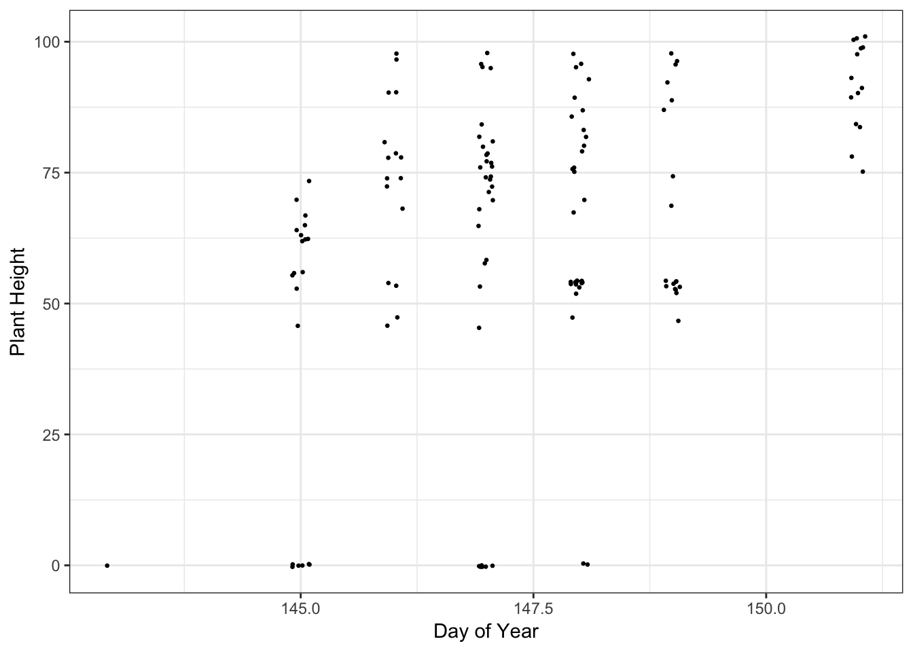

5 How to query trait data
5.1 Setting options
The function that you will be using to perform your queries is betydb_query. Options can be set to reduce the number of arguments that need to be passed into the function.
Note: the betydb_key option only needs to be set when accessing non-public data. We will be using public data, so this option does not need to be set. However, when needed, pass in the API key that you were assigned when you first registered for access to the TERRA REF database. The key should be kept private and saved to a file named .betykey in your current directory. If you are having trouble locating your API key, you can go to https://terraref.ncsa.illinois.edu/bety/users.
options(# betydb_key = 'Your API Key', # to access non-public data
betydb_url = "https://terraref.ncsa.illinois.edu/bety/",
betydb_api_version = 'v1')5.2 An example: Season 6 canopy height data
The following is an example of how to query season 6, canopy height data for May 2018.
canopy_height <- betydb_query(table = "search",
trait = "canopy_height",
sitename = "~Season 6",
date = "~2018 May",
limit = "none")A breakdown of the above query:
table = "search"- Specify a table to query with the
tableparameter. Trait data may be queried using thesearchtable.
- Specify a table to query with the
trait = "canopy_height"- Specify the trait of interest with the
traitparameter. - Trait names must be expressed exactly as they are in the TERRA REF databse. So passing in
Canopy heightinstead ofcanopy_heightwould give NULL results. - More information on how to determine available traits for a season can be found below under
How to query other seasons, traits, and dates.
- Specify the trait of interest with the
sitename = "~Season 6"- Indicate the sites that you would like to query using the
sitenameparameter. - A tilde
~is used in this query to get all sitenames that containSeason 6
- Indicate the sites that you would like to query using the
date = "~2018 May"- Indicate the date of data collection using the
dateparameter. - A tilde
~is used in this query to get all records that have a collection date that contains2018 May
- Indicate the date of data collection using the
limit = "none"- Indicate the maximum numnber of records you would like returned with the
limitparameter. We want all records for this query, so we set limit tonone.
- Indicate the maximum numnber of records you would like returned with the
5.3 Time series of canopy height
Here is an example of how to visualize the data that we just queried.
#load in necessary packages
library(ggplot2)
library(lubridate)
#plot a time series of canopy height
ggplot(data = canopy_height,
aes(x = lubridate::yday(lubridate::ymd_hms(raw_date)), y = mean)) +
geom_point(size = 0.5, position = position_jitter(width = 0.1)) +
xlab("Day of Year") + ylab("Plant Height") +
guides(color = guide_legend(title = 'Genotype')) +
theme_bw()